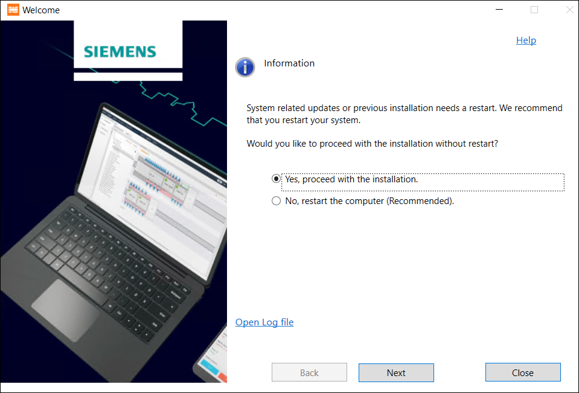

Installing ABT Site and ABT Pro
Prerequisites:
- Verify that your current supported Windows version is up-to-date with all the latest Microsoft service packs and updates.
- Microsoft .NET Framework 4.7.2 must be available on your machine
- In the Control Panel, turn on the Windows feature for Microsoft .NET Framework 3.5 (includes .NET 2.0 and 3.0).
- Once the ABT_Installer.exe is launched, the following screens appears on your machine:

建议您先重新启动计算机，然后再继续安装 ABT Site 和 ABT Pro。请在重新启动机器之前保存您的工作。您也可以选择稍后重新启动计算机。根据您的要求选择正确的选项并单击Next.
完成以下步骤，使用 ABT 安装程序安装 ABT Site 和 ABT Pro 及其库。